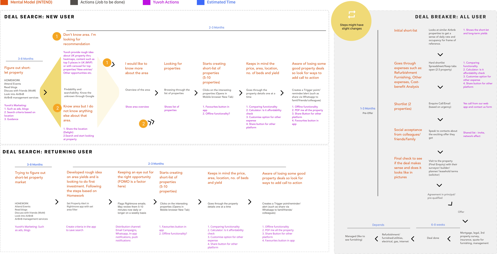
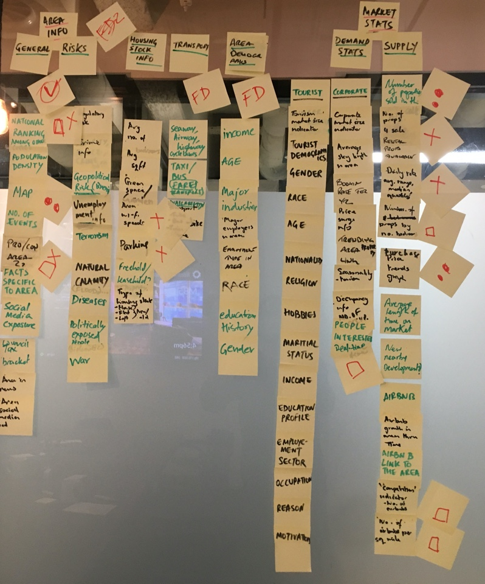
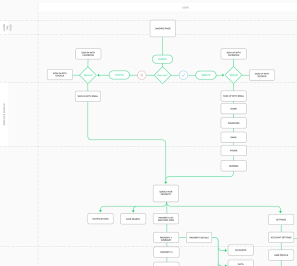
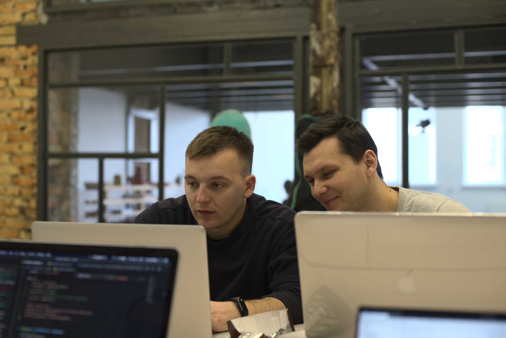

PROBLEM
The property investment market is broken.
Traditional companies such as Rightmove and Zoopla are focused on residential property while do not fully cater to buy-to-let (BTL).
With the inception of companies like AirBNB, the market has seen unprecedented growth and shift towards short-term BTL over long-term BTL due to higher rental yields. This has created new opportunity as well as uncertainty.
There is no easy way to understand the valuation and rental yield of a property. Investors depend on property brokers, subscribe to market trends, some guestimates and some do detailed analysis using traditional time-consuming methods in excel.
These techniques are risky, unreliable, expensive, in-efficient, stressful and often ends up in bad deals.
AIM
An MVP (Minimum Viable Product) was built that gained popularity among property investors (a network of early adopters) due to its yield estimation engine but it had challenges around user experience, engagement and product-market fit. While MVP proofed that the model works, it failed to engage users due to lack of User experience.
The goal was to design a consistent and coherent experience for the users while increasing their engagement.
REQUIREMENT GATHERING
I began the project by running stakeholder workshops to understand their requirements and familiarise myself. This helped me in developing insights on the business, roadmap, constraints and technical feasibility and get an entire picture of the user and the vision the team had for the platform. I used a modified version of the business model canvas.

Further, I teamed up with the product manager to map out the key stages in the customer journey and how the business currently addressed those needs for the customers. This provided a set of hypotheses to test and some ideas to explore by directly interacting with the customer.
DESIGN RESEARCH
I conducted expert customer interviews, evaluation of the existing MVP and competitor analysis to drive our design research phase.

Figure showing participant management in GDrive and live interview with 2 customers
Interview
Together with the product manager, I began interviewing several property investors, from first-timers to experienced investors, participants were sourced through the personal network and paid ads.
The interview was focused on their approach, experience and pain-points. Interviews were done over Google Hangout.

Early evaluation of the proof of concept
Cognitive walkthrough
Based on the interviews, the next logical step was to go through the MVP putting myself in the user's shoe. I choose a few key tasks and conducted a cognitive walkthrough evaluation.
Content Audit
I further evaluated the content with using a qualitative content audit that reviewed each piece of site content and functionality to identify what to keep, what to delete, and what new content/functionality that needs to be created.
KEY FINDINGS
The research phase gave us insights about how people would discuss investment with their close network over social media, they would attend property education and networking events and the majority of them are subscribed to property alerts.
We noticed that guaranteed yield and short-term BTL were preferred over long-term BTL. Further, the evaluation provided insights on the existing platform’s content structure, core features and user journeys. We drew on these insights through the design process.
EMPATHY
Personas:
Our research highlighted 3 main users (beginner, intermediate and expert investor) who had their unqiue needs. We created 3 individual personas as shown below.
This helped us to create empathy and find commonalities. We referred to them throughout the entire product development process.

Journey Maps/Concept Models:
Further, we created journey maps blended with concept models to have a complete picture of the user, services and product in a single view. This helped us understand customer intention, their action and how customers could find and interact with our service.

Customer Journey showing user intentions
IDEATE

Creating wireframes and low-fidelity prototypes for user testing
From our research, we were able to work out what matters to its customers and how to visualise those insights in a way that customers can understand. It would also help the customers make informed decisions and build trust in the site.
They didn't care about viewing the house per se nor care about the location, they cared more about the point of interest around the location was an important early factor. So we mapped out all the different PoIs and how that could be integrated into the platform. These kinds of insights occurred throughout our design research process and fed into our visual design direction for each product line.
PROTOTYPE & ITERATIONS
Crafting the customer journeys for each of our personas, was the best way to conceptualise and structure the proposed content and functionality.

Showing part of a Yuvoh process flow map (v4.5)
Process Map - Defining Success Metrics:
We used the process map to translate the journey map into wireframes. It also helped us to highlight any redundancies in the current workflow and target opportunities for improvement. It also helped us define key success metrics and build a funnel to measure success and analyse expectations.
We tried out a range of ideas as lo-fi sketches and then developed them into mid-fi wireframes in Invision Freehand. Sketching wireframes allowed us to quickly test and iterate design solutions.
The early test helped us identify features that would help customers understand their choices and make more informed, confident purchase decisions.
User insight helped set the design direction quickly and show this in a Proof of Concept. This meant that before significant investment in development we could check and improve our thinking with feedback from business stakeholders and target customers.
Wireframes:
DESIGN & TESTING
We quickly moved into the product design phase. I worked with Yuvoh design team in a series of 2-week sprints to define the key features of the new platform.

Front-end team members